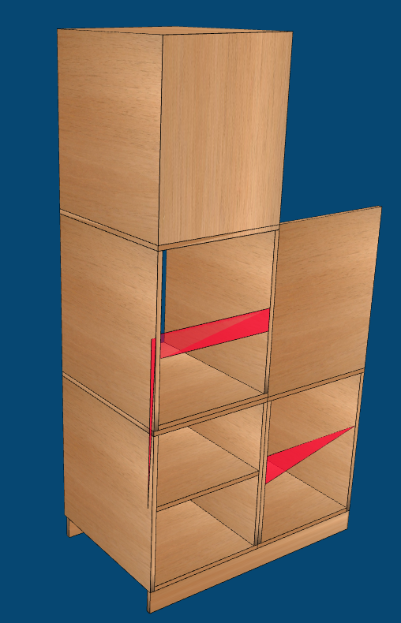
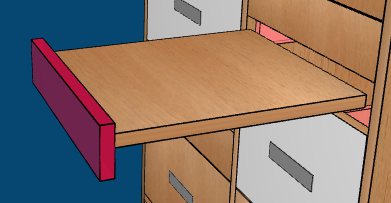
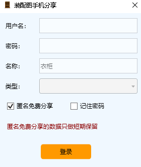
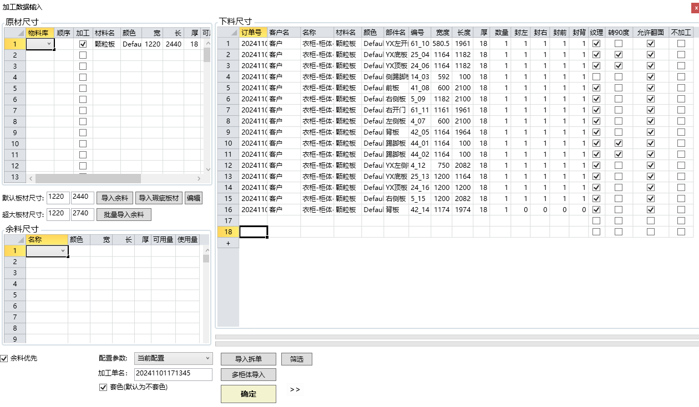
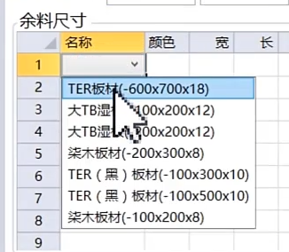
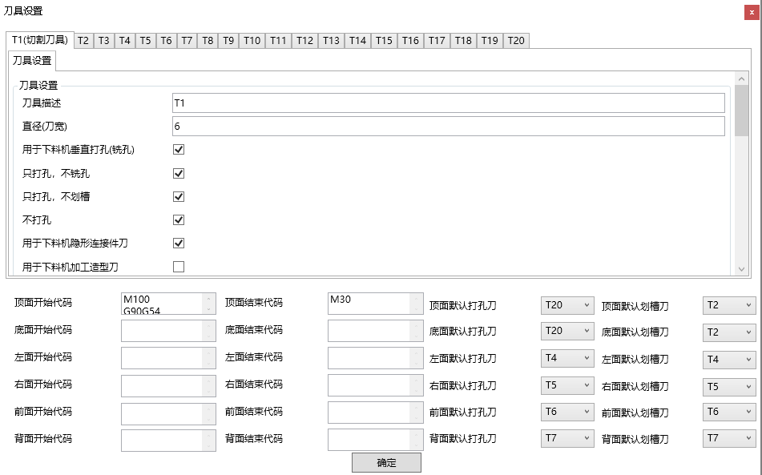
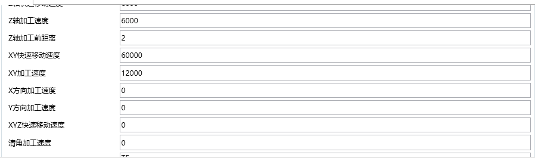

导览
RMB 环绕观察 ctrl+RMB 或 MMB 推拉镜头 shift+RMB 平移
alt+RMB 透视调整
ctrl+LMB 多选
选择任一板件再 ctrl+a=选择单个柜体全部部件 在二维视图框选不会选中前板和背板 （以及门板）
文件选项-格式
系统参数的导入导出 .cfgz
柜体模型文件 .slfc 可以通过 文件-打开 还原（可在另一台电脑还原/继续拆）
导出 .dxf （柜体标注图纸，正背俯侧等，用cad打开）
导出 .obj 用于其它3d软件做场景渲染等
导入cad 柜体
在cad中 构建柜体框架（正视图，纵横板关系）导出dxf，然后

ctrlA 批量改封边纹理等，之后继续用内部建模工具完善即可
注意柜体绘制不能离坐标原点太远
在cad中设置好踢脚和顶挡板
同样使用矩形，但需要参数 厚度表示板厚，标高 则表示深度（自框架前面的缩进值）
注意事项
只能用rec命令，不能出现弧线、斜线，rec 绘制的对象也不能通过加点、转弧线、炸开等破坏等，四个内角必须保持90°，矩形可以相交，但不能旋转

对于板侧拉斜边实现免拉手，可以导入 （柜深=模拟宽度，柜宽=模拟板厚）然后应用切角，
但这样只能在视觉上充当门板，云熙拆单加工不一定能正确处理
分机安装问题
使用软件的电脑，防火墙必须都一直关闭，主机上的软件需任意打开一个（局域网通信验证狗）
除插加密锁的主机外，其余分机的软件安装跟主机一样，
查询主机电脑IP，在分机注册（登录）界面上填写（主机不填写）；
dxf导入导出
在cad留意厚度参数即可，详参异形编辑。将原板导出为dxf在cad再修改，方便控制边界
椭圆没有厚度特性，PELLIPSE 1，之后绘制的椭圆才是多段线，具有厚度
常用工具栏
家具制作tab
加层板、立板、背板等和板件工具栏差不多，主要不同在于前后分隔板
辅板
辅板：只开料，不打孔
第一种方法在设计端直接添加
辅助板用于在家具和墙体之间填充
辅助板是不需要依附于柜体体量的，通过修改属性调整角度和位置（制作收口封边）
门式收口板可用用前板做（侧板内收，让出空间即可），也可以用左/右挡板做（L型收口）
抽屉
面板类型选项中，普通是面板和抽斗的侧帮（三块壁板）直接连接生成孔位，吸塑是抽斗自带四个壁板（侧帮+前后板），面板额外加到前壁板外。只要面板
选项即生成假抽的意思，只有抽面作为装饰，没有实质的抽斗和滑轨等。
内嵌和外盖指抽面是与柜体前面平齐还是突出于柜面。侧隙系抽面与两侧的柜体立板之间的缝隙， 层距系上下两抽面板间隙
抽屉底板的结合样式参照背板理解，划槽式是在抽帮上开槽，底板嵌入槽中，底板间距控制底板参照侧帮底边的高度，底板厚度同时也是开槽宽度，加固拉条参背板理解；内嵌式是壁板(+抽面)包夹底板；外盖式则是底板托抽帮
裤抽，用来挂裤子的

键盘抽不表
骑马抽
骑马抽即豪华阻尼抽，常用于厨房设备等，（因为有餐具厨具多有陶瓷或玻璃部分，有阻尼能避免碰撞损坏），两边的阻尼器是成品金属件，所以在云熙的建模中抽帮是缺失的
参数上，底板侧侧边与抽屉两侧立板之间留出阻尼导轨宽度，
托底抽
托底抽的导轨安装在抽底（隐藏），滚动更顺滑，承重能力更好，外观简洁
托底抽的轨道按实际购买的轨道参数设置
凹形抽，凸形抽
凹形抽的意义是在充分利用固定设备/管件等两侧的空间
上翻收纳同理
暂不清楚什么场景会用到这种抽屉
拉手
牛角拉手

计算排量前要设置刀具，选一个刀头，设置刀径，勾选用于下料机加工
单独输出拉手的加工nc，在开完板材封好边后二次加工
特异抽屉
免拉手抽屉
n连抽中间无层板，无拉手
制作方法就是前板缩进，层板延伸平齐到前板，通过面板的上下延（外盖）来做拉手
柜门的免拉手也是相同的逻辑
弧形拐角抽屉
目前只能实现俯视图和前视图上的转角圆弧，这种弧形抽屉做不了
顶底板通过异形编辑器完成
圆弧半径大于200，用6mm刀具加工，半径小于200的，用3mm刀具加工
背开槽弧形折边技术——弧面"排骨纹"
misc
遇到选择的空间区域无法生成抽屉的时候，检查各项参数的高度值等，是否与空间尺寸约束冲突，还有 抽屉间距-数量 选项是否有问题
抽帮高度一般抽面减50，酌情加减
门
在层板之后创建的门板可以用延伸平齐将门板拉成通高
门板也是板件，可以使用异形编辑器修改
门板需要下料加工？
在板件属性中可改回下料加工
门板合页孔
孔位设置只能设置排布间距和首末间距，不能自定义每个点位
当遇到合页与现有孔位冲突时，只能修改门铰链的孔位
不勾选默认孔位，调整上下边距
自定义孔位表达式：柜底到下始首孔间距 | * | * | * | .. | 柜顶到下始末孔间距，每个 | 代表着一个铰链位，*
代表高度变量（自适应均布），任一 * 都可以替换为具体的间距值，以实现不规则孔距
修改属性里也有类似选项
玻璃门
实际是木夹玻，铝框玻、纯玻门没有（全屋定制是木作）
门板带槽
D槽深度 W槽宽度
门板拉手
转角衣柜加门板
转角衣柜的横板边长参数可以到异形编辑器中点选边来查看

通过遮掩样式调整拉手位置
另一侧同理
免碰撞
关键在拉手（在门的开启角度内不能碰到），可以考虑免拉手做法
门板打斜边充当拉手
用工艺说明标注
凹槽拉手
ditto
切角
切角是为了避让梁、柱、管等，选择柜体其中一个部件，然后选择对应的视图设置切角参数即可。撤销切角是撤销全部，若柜体有多处切角，可能需要全部重建，但这种情况还是比较少见的

格子架
去选宽度作为基准，使用固定列数，用于创建完全充满空间的格子架
衣通
手工打孔则不会生成衣通的孔槽，去选手工打孔，即机器预开孔，才会生成孔槽
一般多柜体订单拆单生产流程
文件格式：slfs设计端 slfx拆单端，打开时间最近的一个即可
每个房间分别建模，单独一个文件，分别拆单dxf确认导出，但先不启动下料，同一项目中所有工程文件都导出拆单文件后，再启用下料【生产端软件】（如果柜子有异形，启动下料前需要拆单辅助-异形件修正）
把同项目的柜体文件夹放到一个同一的项目文件，在生产端的工程库导入，选择项目，点导入，（或在导入面板：先清空，再 多柜体导入选择顶层项目文件夹，勾选要生产的柜体）
管理tab
云图库的柜体用 添加到布局 即可添加到当前项目，但不是所有柜体都可编辑。家具库同理。
订单
建模之前填写项目元数据，如果已经开始建模，但是想修改所有柜体的材质，可以在订单选项中设置，其他元数据同理
或者 批量修改-修改板件属性
板材管理
功用不明
封边条
厚封边条（1.5）薄封边条（.5）：常规如三薄一厚，厚封边用于可见面，其余用薄封边，省成本。但薄封边修边处理较难，不如厚封边圆润
设置 选项中有全局预设的 厚/薄封边值
常用工具栏的封边条管理
板件面板的封边属性和属性面板中板件属性-封边几乎是一致的

拆单的加工数据输入，下料尺寸栏会有封边厚度信息，可以二次修改
设置参数
常用
保存设置中，可设置自动保存间隔，保存路径，保存时是否更新孔槽、是否生成柜体缩略图等。
物料清单设置与报价相关
板件参数（打孔规则等）
板材尺寸是原料修边后的尺寸
板件许可尺寸，超过设置的板件不会体现在报价单中？
封边厚度？ 厚边，薄边
自定义（这些参数都是需要的对结构和安装有深入了解才会设置）
比如设置层板深度在600内时，在深度方向会有2个二合一 ，则长度写600，二合一写2，同理类推，如果是侧板/中立板，长度对应的是高度方向
孔位
基本是按国标来的，多数时候不用管
修改连接
找到对应板件，不勾选系统默认孔位佈局，
長度表示從這個數到比它小的另一個長度參數的區間，都應用右側設置
首末孔邊距--》然後調整間距，更新孔槽即可
修改木榫可以到孔位--三/二合一找
柜体组合生成孔位
组合可以生成孔位连接，但不支持滑槽
使用其他连接件
清单tab
检查
检查尺寸、板件有效性和冲突等、
物料清单
多单合并
作用是将多个订单合并输出清单，比如一个项目中不同房间的柜体是分别建模的，通过多单合并可将板材和合并统计，方便报价/成本预算
关于混单生产
设计拆单上使用多单生产，
或者生产排版使用多柜体数据导入（多个柜体拆单数据归纳到一个目录）
多单合并和多单生产的区别
多单合并用于出报价、五金清单，多单生产用于合并计算排版加工
标注图纸
和 文件-导出dxf标注 是一样的，
标注图纸带有二维码，手机扫码可看三维图纸
导出sketchup模型
在项目文件的dim子目录可以找到3d.dxf，在su中导入即可
装配图

点击分享就能生成二维码，扫码可看三维模型，有开窗、门、抽屉，以及看尺寸、爆炸图等功能
柜体生产tab
拆单
建好模型后，点击拆单dxf
启动生产软件进行排样，勾选自动套色

点击确定，然后点计算
之后就会自动排版，
省料 和 余料 的区别
之后就会生成nc文件，把这些文件拷到机器上就可生产
补板
补板即板件损坏（或孔位错误），需要单独补充个别板件的情况（标签中黑色的部位就是板件所处位置）
选择多块要补板的板件，点击 柜体生产-补板 ，打开生产端，（导入拆单数据或多柜体导入），直接确定、计算，即用一块新料重新排版。如果单个项目要补的板件较少，会浪费大板。
另一个补板方法
可以在另一个要生产的单子中导入包含补板的dxf文件，一起排版生产
在原项目的排版文件中，在要补办的板件上右键设为补板，最后右键导出补板文件，新建一个文件夹保存（dxf文件），在下一个要生产的订单中导入补板文件合并排版
整张大板的补板
已加工一部分板件，但发生错误（封边设置等错误，刀具问题、排版错误等），需要利用剩余板件重新排版
勾选每张板的不加工，输出-输出部分板件刀轨后删除已加工工件 输出刀轨
再导入，重新计算排版即可
扫码补板
在右侧查找工件选项卡输入扫描标签上的二维码获得的工件信息，会自动在工程库搜索对应排版数据，调出所在的排版图，右键排版上的板件，导出为补件
在导入界面，选中导入拆单，将文件类型改为图形文件， 导入补板文件
多单生产
多单合并和多单生产都要先更新孔槽，五金等数量才会准确。
多单生产的前提是生成过拆单文件
多单生产 - 我的家具库 中，（已经拆过单的项目会带星标，没拆过的不能加入多单生产，）选中多个柜子，点多单合并，确定，打开生产端软件，之后排版计算就会把多个单子的板件一起排版
自动套色
用纹理工具给板件赋颜色/纹理，在拆单时选自动套色，不同颜色的板就会分开排版
输出刀轨时勾选文件名包含厚度和颜色等，增加套色目录 选项会按颜色生成不同文件夹，输出刀轨后，不同颜色的刀轨放到对应的文件夹
余料
排版中有些版面利用率低，还有大片材料可以，可以右键导出余料，之后在另一柜体拆单进入加工数据中，导入余料文件（.lvr），在余料编辑器调整好位置后按导入，然后确定，排样（余料），
余料单面加工
适用于无双面开孔的板件加工（不翻板加工），
余料管理可以导入余料，或手工输入余料尺寸，点保存余料后，就可以在导入界面找到保存的余料
，
，
勾选单面加工，正常排样
排样图中，黑色区域即板料范围
余料位置添加板件
在计算后的排版空余处右键 导入拆单文件，将补板文件导入，手动拖拽调整位置，
如果是规则板件，可以右键导入 工件数据，输入宽高，如果是勾选了自动填充，则所右键的剩余板件能放下几块就自动添加几块对应规格的工件
瑕疵板材
在加工数据输入处点击导入瑕疵板材，在余料编辑器中框选 禁排区，可以设置瑕疵板的精确尺寸，之后导入确定，排版计算仍旧选择余料
余料数据批量导入
混合生产，不同规格板材同时排版
可以将用量较少的另一种规格板材作为余料导入(物料导入)拆单，（×掉加工数据输入面板，在生产界面管理物料，然后通过导入选项重新进入），设置余料，可以勾选余料优先
另一种设置
48尺/49尺混排，比如项目中同时有2400和2700的柜子，直接拆单生产，在生产端，原材尺寸中有显示不同规格板材，勾选加工，对于2740的板材，勾选 加工超大工件 选项，

可以自定义超大板尺寸，之后正常走排版计算流程，就能混合生产
异形板件及不规则造型等
参数化编辑异形
选择板件后，在 形状panel 启动异形编辑器，
可以直接选择任意两条边线，输出参数来倒角
对于开孔/挖空，通过基础几何类型和布尔工具综合实现
这里的布尔操作是非破坏性的，可以通过拆分工具将复合路径还原成多个独立路径
对齐工具是针对base类型的，
孔类型与轮廓模式
默认情况下系贯通板厚的孔洞，可改为闭合孔，即挖槽

这两个用于将闭合孔转到板的正/背面
将创建的基础图形转为轮廓，然后点击 作为外轮廓，即可替换默认的矩形板件
多段线工具难用，没有捕捉，不知如何闭合，应属半成品功能，可忽略
用dxf控制形状
在cad中创建一个图形文件并保存为dxf文件，绘图尺寸按实，遇到镂空/凹雕处，设置挖空形状轮廓线的厚度（正数/负数），然后放在 图层一
图层一是识别条件，单纯改线型也可
轮廓不能交错或包含，更新或改换轮廓都要重新打开一个dxf窗口再导入
导入的dxf如何定位到板件？
取dxf图形中的 minx, miny 为原点坐标，对应到目标板件的左下角（笛卡尔坐标系）
此例中，图元的原点 (x1,y2) 对齐到目标板件（矩形面域）的左下角
CAD中的厚度設置問題
0層不變，色改megenta，厚度負值，存為dxf，再導入，就是挖槽
六面画图
大所謂六面畫法，就是利用二維視圖的選面，在不同的面添加只屬於正面的部件如前板、門板等
如果是正多边形的柜子，可以用异形编辑器倒角控制斜切角度然后拼接，通过组合生成连接，但不能保证孔槽的合理性

形状panel的其它工具
每个切/倒都是可以调整参数的

对通过 dxf 建立的板件倒角，会破坏原来的轮廓形状，但内部挖空/槽在没有与外轮廓相交时可以保留
- 清空内部轮廓线 可在保留dxf定义的外轮廓的同时，清除dxf定义的挖空/槽
- 矩形 则相反，保留内部挖空/槽，将外轮廓恢复为默认的矩形
- 矩形1 无论外轮廓还内部轮廓都清除，还原默认
这几个都是根据板件的边界创建内切图形，替换原有的矩形板件
圆角 倒角 切角
切角柜（整柜斜切）
多选板件（横板），使用倒角
属性面板的编辑形状
布局工具
柜体对齐，先选择各个柜体的其中一块板件，然后选择对齐方式
组合
为两个独立柜体的相邻板件创建五金加固件连接
如何控制组合时生成的加固件数量等
待详
添加柜体时的定位
在添加新柜体之前，选择已有柜体的某个板件，则新增的柜体会紧邻该板件，即将该板件作为临时工作平面挤出一个体量并封闭出柜体框架
在属性面板中，位置Z即柜体的底高度，Y则是从柜体前面起算从Front视平面后退的距离
删除柜体后的空体量
直接在布局中点删除柜体，不会残留有体量，而点选板件逐个delete，最终会有留下一个体量，可以继续在二维视图通过空间分割继续添加层/立板等。相当于重构。
板件工具栏
在体量上创建板件后，如果直接点击另一个板件创建指令，等于撤销上一次操作，重新执行新操作
要在二维视图点击空白处，确认上次指令，再选择空间，执行下一个板件创建指令，才能叠加操作
但如果是同一指令连续点击，则是正常的叠加操作
批量修改
可点选多个板件批量修改属性
批量改封边和纹理时，需选择“同属性”的板件，
如层板、顶底板都是横板，算是同属性，这是考虑到纹理方向等的一致性
AB面
PET门板等区分AB面（表面处理方式不一致）的板件，先点 A-B翻面将板件设为具有AB面区别的板材，在需要时，再
翻面 调整让A面还是B面朝外
常见的AB面板材有 PET(Polyethylene Terephthalate)：贴完饰面纸后再压贴一层透明PET膜（区别于两面贴三聚氰胺饰面的双饰面板材）。单面覆膜的PET门板容易结构不稳。
双饰面可模拟木石皮等纹理，PET色泽鲜艳光感强（塑料膜保护，具耐热性和耐候性）
有两种：高光PET和哑光PET（"肤感"，抗指纹）
做了AB面的板材，在生产端导入柜体后不能再手动调 允许翻面 选项，面向需要严格区分
延伸平齐
先选乙作为基准，再ctrl加选甲，然后选择平齐方式：将甲的M边对齐乙的n面，
板件自定义
立板：侧板 中立板 空白板
空白板系不生成孔位和滑槽的板件
左中右只是位置区别，左侧间距和右侧间距是相对左/右侧既有板件新建中立板的位置约束
自动累积添加是 点一下加一个，自定义则指定生成数量
横板：顶板 层板 底板 空白板
基本ditto
倾斜角参数用来创建斜层板，负数则后仰，正数则前俯
侧隙距离是活动层板才可用的参数，活动层板不与侧板产生孔位连接，只在下端生成层板托连接 活动层板与侧板的间隙一般自动设置，必要时才手动修改
前板
前板只有两个接合样式：夹、盖， 盖式中需要调整覆盖面宽度，实现四个边的全/半盖等。正数外扩，负数内缩
背板
两个要点，接合样式和背板拉条
接合样式
划槽式
可带背板
内嵌式
单纯靠固件连接，因此要18厚才能包持侧向钉，也因为够厚，所以不需要另外的拉条加固
全盖式
同理ditto
仅拉条
背板嵌入在横/纵拉条之间
槽钉结合

两者区别：纵向加固是中间向两边走（拉条不连侧板）还是从两边向中间走（两端拉条与侧板连接）
背板在拉条后
背板不到顶，这种情况最少两个拉条；背板依靠滑槽固定，和拉条间没有连接
背板在H形拼条上
拉条后置，并在下，用于吊柜
拉条前置，并在上，用于地柜
背板的厚度
常见 5 9 18 三种尺寸，背板主要用于装饰、防尘时，5mm足够，有防潮需求时增加厚度，但并非厚就防潮性能好，因为无论厚薄水汽都是逐渐侵入的；当背板有承重需求时，可用18厚
加固拉条
板厚度和板条宽
什么情况下使用什么类型的背板
前后分隔板
这个板件类型只在板件选项卡有，自定义板件中没有，位置等要在板件属性调整
横板
层板 顶板 底板
层板可以通过顶/底面间距设置来生成顶板、底板，后两者可视为特殊的简化操作
顶挡板
挡侧板即挡板后面平躺的条子
带左右挡板的最佳实践：在柜体顶部添加一个空体量，用这个空体量生成挡板（挡板的本质是立板，在没有层板阻隔的情况下是通高创建的）
顶拉条
左右挡板
注意软件里的左右都是用柜体自身的参照系
在默认情况下，即有侧板时，这个左右挡板是向内弯折的，这不是它们的常规用法
用中立板代替默认的侧板，留出空间，然后生成左右挡板，这样左右挡板就是向外弯折的
勾选宽度自适应，系读取可用空间（绿色范围）
踢脚板
在云熙中，踢脚板本质上就是特殊的前/背板，初始情况下，选择的空间面域多高，生成的踢脚就多高，
所以即使选择中间的面域，还是会生成，有后踢就是同时生成背板，通过 D D1参数控制内向缩进，
加固条在柜体较大时自动生成，需要手动生成时去选自动。加固条的前提是前后踢板俱在
如果勾选了 有左/右端，就同时生成两侧立板，这个最佳实践参照顶挡板
圆弧板
如果选择的类别是一，则前面的 形状（截面轮廓），是横剖面，对应二维视图中的顶面所见，
如果选择的是类型二，则形状系纵剖面、
参设置-板件-圆弧板
配件工具栏
顶饰线与罗马柱
顶饰线是不生成五金连接的
搭接逻辑：后创建的受先创建的构件约束（可用空间被压缩）
灯带灯槽
首末边距就是起终点与层板端头的距离
异形灯槽？
用异形板编辑器的布尔/dxf
层板侧面加灯槽
在灯带选项卡修改所处位置
用空白框架创建组件
利用空间面板的中的锁定尺寸功能，可制作锁定若干参数尺寸的组件
注意搭配板件工具栏的 批量修改 工具修改板件的连接方式等
组件中的参数
待详
组件保存与调用
做好组件后，导出为组件 .cafs文件，在组件模板库导入即可
格架配件库
选择空间，应用格子架，注意尺寸要求即可
视图工具栏
视图
单独显示2/3d或都显示（分栏）3d刷新用于重置到默认视口（F）
纹理
板件纹理 单块板 柜体纹理 整个柜体全部板件 框架纹理 场景纹理 整个场景所有板件 显示隐藏取消纹理（恢复默认）不表
抽屉纹理是抽面的，门板同理
清空场景 deleteAll 板件/柜体的隐藏、隐藏其他、全部显示不表
添加厂家自己的纹理/颜色
点击场景纹理，就能看到云熙保存纹理的文件夹，将自己的纹理文件/电子色卡总文件复制到该文件夹即可
之后再使用纹理工具就能看到自己的纹理/色卡
风格
作用就是将门、抽屉、外框、内架、背板等的纹理作为一个配置组保存，可以复用 新增自定义纹理-左下角添加
其他
整体缩放
如果空间没有加锁，可以通过空间尺寸实现整体加宽/拉高
标签设置
生产端-标签-自动调整
部件编号第一个数字表示在哪张大板上，
装配编号
配合手机扫码显示的装配模型使用
封边信息
右上角二维码的显示封边厚薄，虚线表示不封边
文字铣雕
板件轮廓导出dxf，cad打开，在板件轮廓内添加文字
选中cad文字 txtexp 转成闭合轮廓，清理线条，设置轮廓的厚度值
然后异形编辑作为dxf导入
字体类型，不能有“孤岛”，即挖空的地方不能内部有未挖空的不分包
拉直器
参 工艺说明添加
插件
云渲染
需要用到场景插件
快速建模模式
云熙的智库空间可以用异形编辑器控制空间形状以创建异形柜体，
快速建模（需要购买升级）可以用变量参数、表达式，可以快速分割空间来构建框架
生产线软件
标签
标签构成
包含订单信息，分拣编号，部件编号（用于回溯大板），装配编号用于装配图对照，
条形码：用于加工设备读取，
封边信息：[left_right_up_down]，虚线=无封边=厚0.0
二维码：打包软件扫码用
工件图：黑色实心区域即工件在大板上的位置
标签打印
排样后，标签-打印全部标签；在工件上右键打印标签，则是只打印单个工件的标签
分批次打印标签：数字代表大板序号，用 A-B 控制打印范围，并使用 按板材打印标签
查找工件
通过工件尺寸查找：输入 a*b，通过部件编号：即板件编号
通过二维码编号：扫码获得部件编号
套色
所谓套色首先就是应用各种纹理选项（柜体框架纹理就是不含门板抽屉）
拆单时勾选套色，在加工数据输入面板，就会将所板材作颜色区分
余料管理可以设置余料的颜色（从↑复制）
分拣码
在设计端，可以在柜体属性中给不同柜体指配一个分拣码字母，
然后在生产端，标签

字母相同表示属于同一个柜体，方便打包安装
打包软件基础用法
加载工程文件 导入 .xml 格式排样工程文件，会自动列出所有板件的清单，
扫描枪扫描板件标签上的二维码，凡是扫过板件的都会移到下方已扫描的清单栏里。当已扫码的板件差不多可以打一包的时候，点击下一包，弹出打印打包标签窗口，打印出来贴在包装外即可。
打印一次打包标签后，当包次涉及的已扫码板件会显示已打包。继续 扫码-打包 的步骤，直至全部打包完成
打包软件安装
安装后，用户名输入锁号，即可登录
工艺说明添加
板件-修改属性，将【】并之间的内容粘贴到名称后面
之后正常更新-拆单-排样
板边斜切（免拉手） 等工艺也可以用同样的方式标注，无论打包时是否能识别播报，让工厂注意看标签加工即可
工艺说明播报
生产软件输出 pak 文件，拷贝到安装了分拣打包软件的电脑，在打包软件导入，之后用扫码枪扫描对应工件会播报【】之中的内容
播报是为了在打包前提醒检查相关配件是否安装
保存文件 保存当前的打包记录 pak，
标签设置等

首次导入数据后，可以在排样文件自动生成的标签后添加自定义的标签行
以上设置需要 切换一下tab触发更新
打包标签打印要现有打包数据才行
导出excel用于将文件中所有板件的打包状态输出清单
自动保存设置，会在安装目录自动创建临时文件夹
条码扫描区
分拣条件与分拣位
点击 分拣 根据条件创建分拣位，点亮分拣位=筛出对应范围的板件清单
分拣位就是将板件分批处理时的细分层级
分拣的板不全时，可以勾选占用，此时点击清空，被占用的板件清单项会保留在界面中
将清单中的条码信息复制到扫描区输入框，系模拟扫码枪扫码，播报相关信息
双击清单中的项目，可撤回分拣(=删除项)
点击 开始打包 后，再用编号模拟扫描会播报 已扫描，显示已打包的则不可撤回，
点击下一包或扫描右上角二维码
分拣详解
车间预先划出位置，扫描分拣板件，识别是否需要安装配件或二次加工，之后将板件放置在对应编号的位置上
单一订单分拣打包
一个订单只有一个柜子，可以跳过分拣，直接开始打包
一个订单有多个柜子，分拣条件选择订单号和柜体名，然后按分拣位分别分拣打包
分拣
在条码扫描区输入清单项编号/扫描工件二维码时，当前工件状态显示为已分拣，即此件此时应该要配往指定的分拣位置（播报的待加工工艺/待安装配件会有影响）
按条件筛出的当前清单项全部分拣完成后，会弹窗提示并要求保存文件（pak）
打包
有时分拣是为了确认板件齐全后立即打包，通过打包/下一包配合完成打包，之后打印标签贴上即可
多个订单混单分拣打包
多个订单用到相同材料，一起排版加工的情况
做法是一样的，因为分拣条件可以按订单和柜等多个层级划分处理批次
当播报提示 n号分拣位 剩余0块 时，可以先将分拣好的打包（车间位置不够），或者继续分拣最后再打包（车间位置够）
清空前先保存文件，（占用），并或导出excel
打包misc
模糊搜索
打包时补板
补充的板件，扫描时会提醒非本批次板件，人工确认是否属于当前订单，然后点击 补板 按钮
将光标聚焦于补板条码输入框，扫码或粘贴补板编号
如果板件之前没有被分拣，需要先确认分拣扫描，更新二维码数据到分拣清单，
已分拣过的板件，只能打包扫描，
分拣打包都有的时候，直接确认，替换二维码，然后点一下分拣位刷新列表数据
手动排样
有需求时（比如要输出特定形状的余料），可以在计算好排样后，手动点击拖拽工件手动排样，然后在右键 手动排样-对齐，还可以旋转工件以改变纹理方向
转移工件到大板
选中板件，按住鼠标左键不放点击鼠标右键，弹出此窗口后，同时松开鼠标左、右键
左键按右侧滚动条，将所选板件放置在有余料的大板上，对齐即可
手动排样的快捷键
CTRL + Ａ | Ｗ | S | D 上下左右对齐
跑板预防
应该最后一刀切长边，并且靠大板
下刀点（黑色小三角），默认逆时针切割，所以如果是边缘的小板，正确的下刀点，应该遵循下图规律
调整下刀点与切割顺序
“跑板”：加工时板材跑偏（为什么？小料先切靠近大板的边，之后切两端时，一端受力会让小料有远离大板的倾向）
在排样上右键，下刀点调整
如果是边缘的小板最后切，小板与大板分离时也容易跑板，
这时在排样上右键， 切割顺序调整 ：提前或后延，将边缘的小板先与内部的大板分离
排样的板上标识，第一行第一个数字就是切割顺序（有些版本没有）
刀轨相关
排样后，输出刀轨，即 .nc 文件
路径模拟
点击模拟，选择刀轨文件
同一个颜色表示用的是同一种刀，实线为加工路径，虚线为快速移动路径
路径模拟计算槽边距
槽距离上/右边缘：切割路径坐标值-槽坐标值-切割刀半径-开槽刀半径=槽距边值
槽距离下/左边缘：槽坐标值-切割路径坐标值-切割刀半径-开槽刀半径=槽距边值
坐标就是 CNC 加工代码中的 XY 值
多头钻和排钻打孔
右键多头钻打孔设置/排钻打孔设置，如果正反面都没有孔位，说明不是用~打孔
多头钻就是有若干个 Tn 刀具设置，
如果不是以排钻方式导入，就是以多头钻加工
刀具和排钻设置


导出领料单和封边用量
生产端软件，输出：
领料单是按排版加工次序依次生成；封边条用量要额外 * 1.2 （避免购买的封边条不足量、封边条首末端要切掉不用）
板材额外+量：在必要时，多预一块，避免售后补板（加工问题、数据错误、运输或安装损坏）要另外找材料
板材知识
门板材料
真空吸塑模压门板（密度板+厚PVC膜烤粘） 包覆门板（四边框+中间芯板） 实木门板（可有扣线【moulding】）
全屋定制结构知识
四大项：尺寸、功能组织、结构、花色（+造型+纹路方向），要点：秩序、功能件、环境因素考虑、空间利用效率
三区： 650-2100 上肢活动半径，高频使用【挂、搁、摆】 650- 下蹲操作区，存放较重、不常用物品【地】 2100-2800 长期不用物品，重量较轻【吊】
侧板、顶底板、层板结构
侧板分普通侧板和装饰侧板， 普通侧板就是左右和中立，中立又分落地与否 双18结构装饰侧板，就是两块立板盖一个装饰前板，
顶底板，主要是夹、盖关系，专业术语是侧包顶、顶包侧，还有中侧包顶就是顶板被中侧板断开的情况
层板
分固定和活动，固定层板在分割空间之外还有稳固柜体的作用，
圆弧层板:标准弧度R 20 50 100 200 300 500 800
活层=上下间距可调整
横隔板：与活层板有区别，它的作用是分割背板，解决背板超宽等问题
斜层板 意义是通过斜置增加置物深度，深度限制200-600，如果是前低后高，需要在前沿加挡板
层板厚度18 25（9mm的不适应做层板）
基本连接
普通的顶底板，用三合一和侧板连接 18底板+70踢脚的结构，用拐角件固定 圆弧顶底板 只能做50厚
按门分柜：趟、掩
底柜最高2400 趟门 侧板18， 背板标准9特殊8/18/25， 层板标准18，内进一般105（留推拉门位） 顶底板标准18， 脚线 标准高70 18厚 最大宽 1200 掩门 层板18 内进一般5 余同 注意功能件与铰链的避让、拉手与柜体的冲突
门板
铰链数量，门高每500一个铰链，总数1+h/500
单扇门宽L=(柜体洞口宽W+（门扇数-1）*门竖框宽A)/门扇数 当然四扇门时根据中间两扇门的闭合关系，竖框宽 *2 或 *3 都有可能
平板门即无造型，刀型门即前板面有雕刻，木框门即四边带芯
配件：功能件、功能五金
功能件是指各类抽屉，抽屉、鞋抽、时尚抽、多宝阁、裤抽等 功能五金是衣篮等，有时包括翻板床（正翻/侧翻）
功能件：抽
盒式抽屉=（抽斗[三+底]+轨道）+（抽面+拉手） 标宽 W=364mm W=464mm W=564mm W=764mm 非标宽度： W＜564mm， 564mm＜W≤900mm
多宝阁=格子抽斗 裤抽=条斗
标准宽：W=564mm W=764mm
非标宽度： 564＜W＜764mm， 764mm＜W≤964mm
抽屉一般都是18板，多宝阁的隔板是9mm，
轨道
默认为三节轨配置
普通轨道、阻尼轨道、反弹轨道 轨道占用空间宽度：27mm/副 普通轨道：L=200mm 阻尼轨道：L=300mm/350mm/400mm/450mm/500mm 反弹轨道：300mm
功能五金
侧翻翻板床（宽900mm高2000mm 宽1200mm高2000m） 正翻翻板床（宽900mm高2000mm 宽1200mm高2000mm） 床垫的话，床的总宽、高各减20mm
misc
封板
置于柜体侧边及顶上的板件，用于调节安装缝隙及墙面不直 加工范围：50mm≤W≤1200mm；50mm≤H≤2400mm. 封板要突出柜体安装时需配辅助板
罗马柱
装饰板的欧式线条，起收口条收饰作用，一般需要配置见光板 加工范围：W=50mm、60mm、70mm、75mm, 500mm≤H≤2700mm.
帽檐线
即顶饰线，最长可做2400mm，需现场裁切拼接 不同顶线的高度和外飘尺寸可能不一样
绘图注意事项
三视图：俯视图（剖）、正视图、侧视图（剖）， 明细栏：物料、花色
设计图不要出现饰品，易造成拆单错误 门板一定注明掩门开启方向或趟门摆放方式